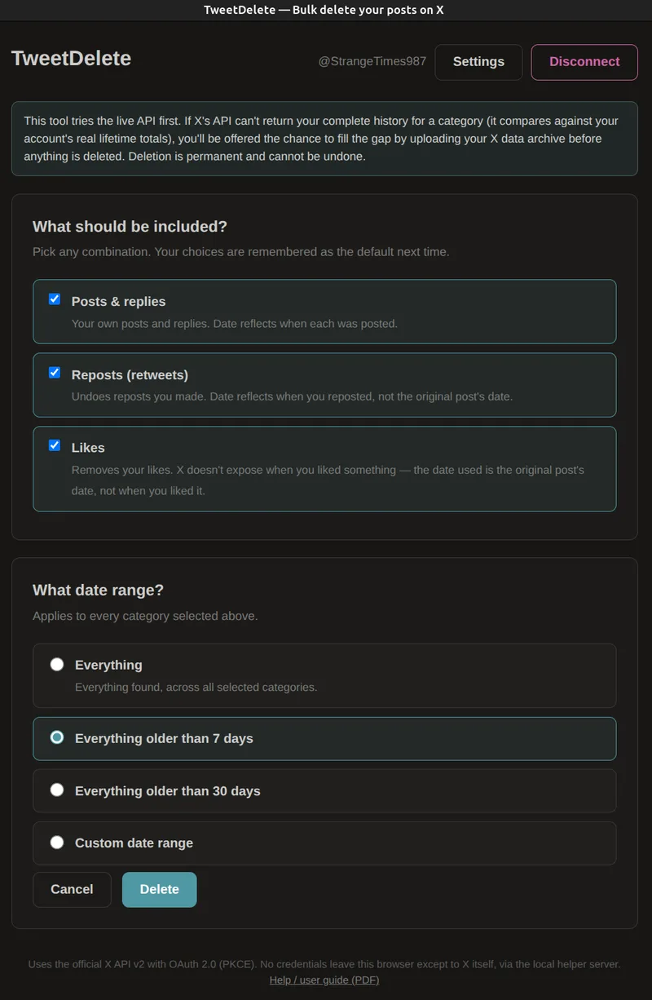

Is this for me?
XTweetDelete deletes your posts, replies, likes and reposts on X in bulk, so you don't have to remove them one at a time.
A few dozen posts take seconds. Thousands take longer, because X limits how fast apps can work. For very large accounts, the app will ask you to download your X archive so it can find older posts.

What you need
- An X account with the posts you want to delete.
- A free X developer account, to get a "client ID" the app uses to sign in. This is the fiddliest part; the steps below walk you through it.
- A little prepaid X credit. X charges for automated access, about $0.005 per deletion at the time of writing. The app stops if your credit runs out.
- A Windows or Linux computer, or an Android phone.
Download
Install
- Create your free X developer account and copy your client ID.
- Download and open the installer for your device. On Windows you'll see "Windows protected your PC". Click More info, then Run anyway. On Android, allow your browser or file manager to install unknown apps when asked.
- Open TweetDelete and paste your client ID when it asks. You normally only need to do this once.
Problems and help
It stopped before deleting everything
X only lets apps see your most recent posts (about 3,200 at the time of writing). Download your X archive and give it to the app to find the rest.
It keeps stopping
X rate limits, currently every 50 tweets, pauses for 15 mins. The app will run in the background and resume when the limit resets.
Old likes won't delete
Very old likes usually need the archive download too.
Want the detail? Technical information: how it works, command-line install and limitations.